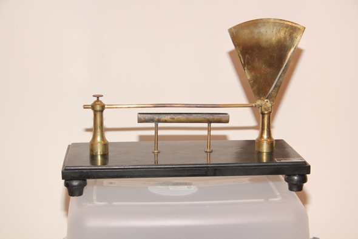

Termoscopio dilatometro
Scuola di provenienza: Liceo Statale "P. E. Imbriani", Avellino
Settore: Termologia
Costruttori: Sconosciuto
Materiali: Legno e ottone
Accessori: Nessuno
Stato di conservazione: Buono
Descrizione: Apparecchio per la dilatazione lineare dei solidi; costituito da una sbarretta metallica, fissata ad un estremo, da un tubo pieno di ovattache si bagna di alcool e riscalda la barretta sovrapposta. Questa dilatandosi per l'aumento di temperatura spinge un indice lungo un'ampia graduazione verticale. Opportunamente graduato lo strumento è in grado di misurare gli allungamenti delle sbarrette di metalli diversi.